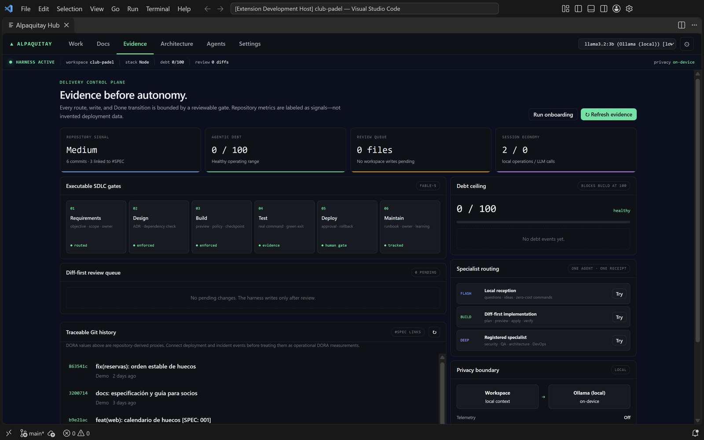

Chapter 07
Evidence: signals, debt and review
The Evidence tab is the delivery control panel: one screen with what the harness knows about your project and what is waiting for your decision. Its motto sums up Alpaquitay's idea: evidence before autonomy.


The four metrics
| Card | What it shows |
|---|---|
| Repository signal | The approximate DORA level computed from Git (High, Medium, Low or no data). |
| Agentic debt | Current debt out of 100. |
| Review queue | How many files have a diff waiting for your decision. |
| Session economy | Local operations versus model calls. |
The Run onboarding (same as onboard) and ↻ Refresh evidence buttons are at the top right.
Executable SDLC gates
The six phases (Requirements, Design, Build, Test, Deploy, Maintain) with their gate and state: routed, enforced, evidence, human gate or tracked. They show what kind of control the harness applies in each phase: in Build and Design it is enforced, in Test real evidence is required and in Deploy a person always decides. Details in How the harness thinks.
Review queue
Lists every file with a pending diff. Two buttons:
- Discard all — discards them all (like
no). - Apply & run gates — applies them all with policy, automatic review and checkpoint, and runs build and test (like
si aplicar).
When the queue is empty you will see "No pending changes. The harness writes only after review."
Traceable Git history
The repository's latest commits, with a mark on those that link a task (#SPEC-001 or [SPEC: 001]). The note next to it is deliberate: the DORA figures are repository-derived proxies; connect your real deployment and incident events before treating them as operational measurements.
Debt ceiling
Score, state (healthy, high or ceiling broken) and the latest events that moved it. At 100 the Build lane is blocked. It is paid down with onboard, applied diffs and verified Done tasks.
Specialist routing
A reminder of the three lanes:
- Flash — local reception: questions, ideas and free commands.
- Build — diff-first implementation: plan, preview, apply and verify.
- Deep — one registered specialist: security, QA, architecture, DevOps…
Every route leaves a receipt in .alpaquitay/decisions.jsonl: one agent, one receipt.
Privacy boundary
The session's privacy status:
| Line | Usual value |
|---|---|
| Telemetry | Off by default |
| Cloud redaction | Boundary ready, or the number of replacements made in the latest cloud request |
| Keys | VS Code SecretStorage |
| Intermediary servers | None |
The harness strip (below the tabs) shows the same status in short: privacy on-device with a local provider and privacy cloud boundary with a cloud one.